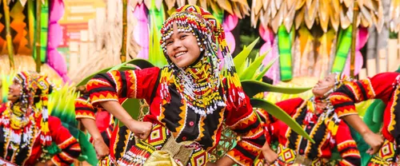
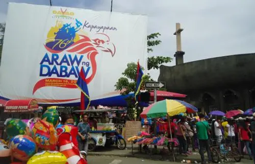
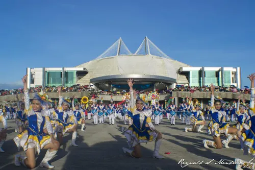
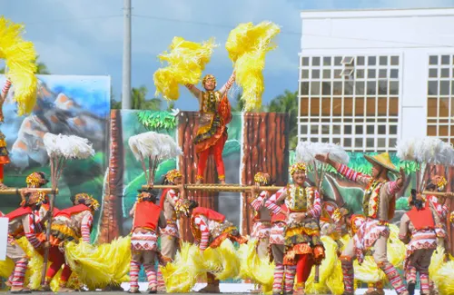

Festivals and Celebrations in the Davao Region: A Cultural Extravaganza
The Davao Region is home to some of the most colorful and culturally significant festivals in the Philippines. These events showcase the rich traditions of indigenous groups, agricultural abundance, and religious heritage, making them a must-experience for both locals and tourists. From the grand Kadayawan Festival in Davao City to unique town fiestas and tribal gatherings, each celebration highlights the region’s deep-rooted history and dynamic culture.

Kadayawan Festival
The Kadayawan Festival is an annual thanksgiving and cultural celebration held in Davao City, Philippines, dedicated to honoring the city’s 11 ethnolinguistic indigenous tribes, the bounties of nature, and the region's rich heritage. Kadayawan is derived from the Mandaya word madayaw, meaning "good, valuable, or superior," and the festival was officially renamed from "Apo Duwaling" in 1988 by then-Mayor Rodrigo Duterte to reflect this indigenous gratitude.

Araw ng Davao/Dabaw
Araw ng Dabaw is the month-long founding anniversary and charter day celebration of Davao City, held annually in March to honor the city's history, heritage, and multicultural unity. While the city was officially inaugurated on March 1, 1937, the primary holiday was moved from March 16 to March 1 pursuant to Republic Act No. 11379 in 2019.

Musikahan Festival
The Musikahan Festival is a vibrant annual celebration of music and arts that takes place in Tagum City, Davao del Norte, a city proudly recognized as the "Music Capital of the South." This dynamic festival showcases a rich tapestry of musical performances, artistic exhibitions, and cultural activities, drawing in artists and enthusiasts from across the region and beyond. The festival's commitment to celebrating the arts is evident in its consistent annual staging, with recent editions highlighting its forward planning: the 23rd edition is slated for February 2026, following the 22nd edition, which was scheduled to run from February 17th to 23rd, 2025. These events serve as a testament to Tagum City's dedication to fostering a thriving arts and culture scene.

Bulawan Festival
The Bulawan Festival is an annual celebration in Davao de Oro (formerly Compostela Valley) that honors the province's founding anniversary and its rich gold-mining industry, typically held every March 8. The 19th Bulawan Festival and 28th Founding Anniversary took place from February 28 to March 8, 2026, featuring a nine-day celebration with activities like the Bulawanong Pasundayag (street dance competition), Jewelry Expo, and a forum on tourism and investment.
Reference: davaodelnorte-festivals